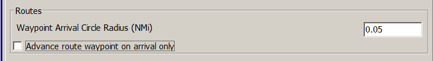
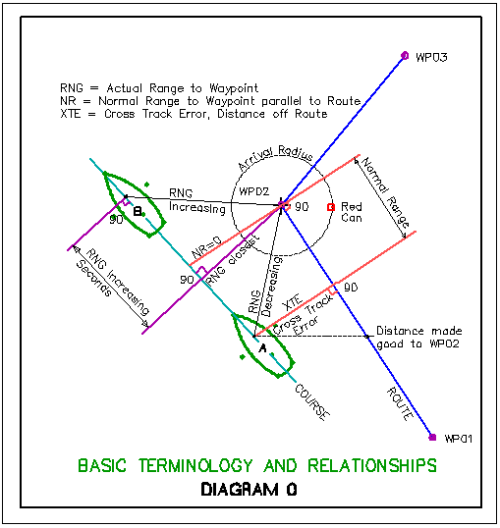
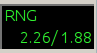

Routes Points
Waypoint Arrival Radius, Waypoint Range Rings, Lock Waypoints
\{\{:opencpn:manual_basic:set_options:ships:tb-options-ships-ownship-routes-points.jpg?600|tb-options-ships-routes-points}

New Routes
-
Waypoint Default Icon <selection>
-
Waypoint Arrival Circle Radius (NMi) <value>
-
Advance route waypoint on arrival only <check> (See detail below Waypoint Arrival Circle radius).
New Waypoints
-
Waypoint Default Icon <selection>
-
Show waypoints only at a chartscale greater than 1 <scale>
-
Override the settings for chartscale based visibility and show always.
-
Waypoint Range Rings <selection>
Control Options
-
Global Lock and Unlock of Waypoints (Unless waypoint property dialog visible)
-
Prevents accidentally moving waypoints unless a waypoint property dialog is visible.
-
Reduces risk of accidentally altering routes and waypoints but makes editing more cumbersome.
-
-
Confirm deletion of tracks and routes, safeguard against deletion.
Waypoint Arrival Circle Radius
Question: When following a Route with the autopilot engaged at what distance from the upcoming waypoint should OpenCPN tell the autopilot to change to the next waypoint?
Answer: The default is 0.05 nautical miles. This is equal to about 93 meters or 300 feet. The default setting does not fit all circumstances. A number of factors are involved, for example,
-
the type of navigation,
-
the waypoint selected,
-
Own Ship’s turning radius and speed.
Find what settings suit your boat by testing.

The arrival radius can also be set individually for each waypoint in the Waypoint Properties dialog.

Advance route waypoint on arrival only
Routes are explained in Waypoint-Routes Tab . With an active route, the Dialog "This Leg" is visible near the upper right corner of the screen. This dialog contains "RNG", the "actual range", or distance to the next waypoint. The "normal range" is different. It is the distance from ownship to a line which passes through the destination waypoint and is at right angles to the current route segment. The actual range is always equal to or greater than the normal range. When the difference is greater than 10% both values are shown in "RNG" (Shown in the Active Route Console The "normal" range is the second number shown. 1.88 in this case. When following a Route OpenCPN normally decides to advance to the next waypoint if at least one of the following two conditions apply.
-
The "normal range" is less than the declared arrival radius.
-
Own Ship is moving away from the target waypoint, and has been for more than two seconds.
With Advance route waypoint on arrival only activated, OpenCPN only advances the route to the next waypoint, if condition 1 above is true. Condition 2 is ignored.
This feature is useful when sailing and you can’t lay the next mark and are forced to tack a few times to reach it. It allows a ship to move away from waypoint without automatically advancing to next waypoint. This ensures that the next waypoint stays active until you either reach it, or you reach a line through it, which is perpendicular to the marked route. In the latter case you have a cross track error greater than the arrival radius.
On the other hand…. Option 2 helps you if you really want to cut a corner by a large distance in such a way that the "normal range" will never be less than the arrival radius. We want to automatically advance the route in this case.